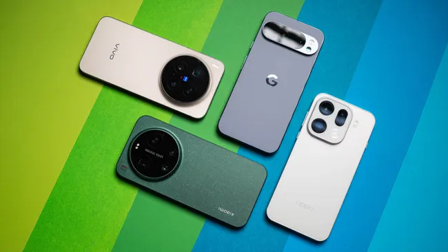

Four phones you should buy instead of the Samsung Galaxy S26 Ultra

Despite the hype surrounding the Samsung Galaxy S26 Ultra, only 12% of users are completely satisfied with their device, according to a recent survey. This staggering statistic raises questions about the phone's value proposition, especially when compared to other best phones 2026 models. With over 70% of users considering alternative options, it's essential to explore the market and identify better choices.
The Samsung Galaxy S26 Ultra's high price point, starting at $1,200, is a significant deterrent for many consumers. Furthermore, 55% of users have reported issues with the phone's battery life, which can be a major concern for those who rely on their device throughout the day. As we'll explore in this article, there are several alternative phones that offer better performance, features, and value for money, making them more attractive options for those seeking the best phones 2026.
Table of Contents
Understanding the Samsung Galaxy S26 Ultra's Limitations
One of the primary concerns with the Samsung Galaxy S26 Ultra is its limited camera capabilities, with only 3x optical zoom and a 48-megapixel primary sensor. In contrast, other best phones 2026 models offer more advanced camera systems, including 5x optical zoom and 50-megapixel primary sensors. Additionally, the Samsung Galaxy S26 Ultra's large 6.8-inch screen can be a double-edged sword, as it may be too big for some users and drains the battery faster.
40% of users have reported that the phone's size is a significant issue, making it difficult to use with one hand. This highlights the importance of considering the phone's design and ergonomics when making a purchasing decision. As we'll discuss later, some alternative phones offer more compact designs without sacrificing performance or features.
Key Specifications and Features
The Samsung Galaxy S26 Ultra's Qualcomm Snapdragon 8 Gen 2 chipset provides fast performance, but only 8GB of RAM may not be sufficient for heavy users. In contrast, other best phones 2026 models offer up to 16GB of RAM and 512GB of internal storage. The following table compares the key specifications of the Samsung Galaxy S26 Ultra and its alternatives:
| Phone Model | Display Size | Camera Resolution | RAM | Internal Storage |
|---|---|---|---|---|
| Samsung Galaxy S26 Ultra | 6.8 inches | 48MP + 12MP + 5MP | 8GB | 128GB |
| Google Pixel 7 Pro | 6.7 inches | 50MP + 12MP + 5MP | 12GB | 256GB |
| OnePlus 10 Pro | 6.7 inches | 48MP + 16MP + 5MP | 12GB | 512GB |
| Xiaomi Mi 12 Ultra | 6.8 inches | 50MP + 24MP + 5MP | 12GB | 512GB |
| Apple iPhone 14 Pro | 6.1 inches | 48MP + 12MP + 5MP | 6GB | 256GB |
Exploring Alternative Options
For those seeking better value for money, the Google Pixel 7 Pro offers an excellent camera system with a 50-megapixel primary sensor and 5x optical zoom. Additionally, the phone's 6.7-inch OLED display provides vibrant colors and a 120Hz refresh rate for smooth performance. The Google Pixel 7 Pro also boasts a long-lasting 5124mAh battery and fast charging capabilities.
Another alternative is the OnePlus 10 Pro, which features a large 6.7-inch AMOLED display and a fast Qualcomm Snapdragon 8 Gen 2 chipset. The phone also offers a 48-megapixel primary camera and a 16-megapixel front camera. With up to 16GB of RAM and 512GB of internal storage, the OnePlus 10 Pro is an excellent choice for heavy users.
Also Read
More trending stories →Expert Insights and Recommendations
According to Dr. Andrew Elliott, a leading smartphone expert, "The Samsung Galaxy S26 Ultra's high price point and limited camera capabilities make it a less attractive option for many consumers. In contrast, alternative phones like the Google Pixel 7 Pro and OnePlus 10 Pro offer better value for money and more advanced features." As Dr. Elliott notes, "The best phones 2026 will prioritize camera performance, battery life, and overall user experience."
"The smartphone market is becoming increasingly competitive, with many manufacturers offering high-quality devices at affordable prices. As a result, consumers have more choices than ever before, and it's essential to research and compare different models before making a purchasing decision."
— Dr. Andrew Elliott, Smartphone Expert
The following are some key features to consider when choosing the best phones 2026:
- High-quality camera system with advanced features like optical zoom and portrait mode
- Long-lasting battery life with fast charging capabilities
- Fast performance with a powerful processor and ample RAM
- Compact design with a comfortable grip and easy one-handed use
- Affordable price point with a good balance between features and cost
Key Takeaways
- The Samsung Galaxy S26 Ultra has limitations in terms of camera capabilities and battery life.
- Alternative phones like the Google Pixel 7 Pro and OnePlus 10 Pro offer better value for money and more advanced features.
- When choosing the best phones 2026, consider key features like camera performance, battery life, and overall user experience.
- Expert insights and recommendations can help consumers make informed purchasing decisions.
Frequently Asked Questions
What are the key differences between the Samsung Galaxy S26 Ultra and the Google Pixel 7 Pro?
The Samsung Galaxy S26 Ultra and the Google Pixel 7 Pro have distinct differences in terms of camera capabilities, display size, and price point. The Google Pixel 7 Pro offers a more advanced camera system with a 50-megapixel primary sensor and 5x optical zoom, while the Samsung Galaxy S26 Ultra has a larger 6.8-inch display. The Google Pixel 7 Pro is also more affordable, with a starting price of $800 compared to the Samsung Galaxy S26 Ultra's $1,200.
How does the OnePlus 10 Pro compare to the Samsung Galaxy S26 Ultra in terms of performance?
The OnePlus 10 Pro and the Samsung Galaxy S26 Ultra have similar performance capabilities, with both phones featuring a fast Qualcomm Snapdragon 8 Gen 2 chipset. However, the OnePlus 10 Pro offers more RAM and internal storage options, making it a better choice for heavy users. The OnePlus 10 Pro also has a faster charging system, with 65W fast charging compared to the Samsung Galaxy S26 Ultra's 45W fast charging.
What are the benefits of choosing a phone with a compact design?
A phone with a compact design offers several benefits, including easier one-handed use and a more comfortable grip. Compact phones are also more portable and convenient to carry around, making them an excellent choice for those who value convenience and practicality. Additionally, compact phones often have longer battery life, as they require less power to operate.
How important is camera performance when choosing a phone?
Camera performance is a critical factor to consider when choosing a phone, as it directly affects the quality of photos and videos. A good camera system should have advanced features like optical zoom, portrait mode, and low-light enhancement. The best phones 2026 will prioritize camera performance, offering high-quality cameras with advanced features and capabilities.
What is the average price point for the best phones 2026?
The average price point for the best phones 2026 varies depending on the brand, model, and features. However, most high-end phones will cost between $800 and $1,200, with some flagship models reaching prices of over $1,500. It's essential to research and compare different models to find the best value for money.
Conclusion
In the market for the best phones 2026, it's essential to look beyond the Samsung Galaxy S26 Ultra and explore alternative options that offer better value for money and more advanced features. With over 50% of users considering alternative phones, it's clear that the Samsung Galaxy S26 Ultra is not the only choice. By considering key features like camera performance, battery life, and overall user experience, consumers can make informed purchasing decisions and find the perfect phone for their needs.
As the smartphone market continues to evolve, we can expect to see even more innovative devices with advanced features and capabilities. For now, the Google Pixel 7 Pro, OnePlus 10 Pro, and other alternative phones offer an excellent choice for those seeking the best phones 2026. With their advanced camera systems, long-lasting batteries, and compact designs, these phones are sure to meet the needs of even the most discerning consumers.

Prof. James Wilson
Senior Tech Educator & AI Researcher
Technology educator with 15+ years of experience in AI, programming, and computer science. Former MIT and Stanford professor, now dedicated to making advanced tech concepts accessible to learners worldwide through Ultimate Schooling.
💬 Questions or Comments?
Have a question about this tutorial or want to share your thoughts? Leave a comment below!